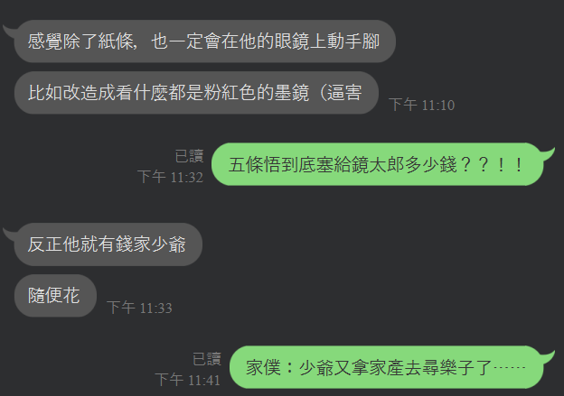

被迫害的七海 + OC + 五夏
延續七海先生的眼鏡世界觀（？）
感謝樹枝大大的點文（？？？？）

/
又是一個輕鬆愜意的午後時光。
這次的客人是個頂著一頭銀白頭髮的高挑男人，臉上還蒙著一條黑色的眼罩。
「唷，鏡太郎先生是吧？今天有營業嗎？」
「有的。請問我能替您做什麼？」
這個人，也是咒術師，而且不是普通的咒術師。他身上帶有過於強烈的咒力，不只蘊藏量巨大，還有相當高的品質。絕非等閒之輩。
「哦，是這樣的，我碰巧在工作場合裡撿到了同事掉落的眼鏡。」男人說著，從口袋掏出一副形狀特殊的眼鏡，我一看就知道，那是我數週前親手打造的眼鏡。
「看起來鏡片有點小小磨損，我就替他拿來保養保養，換個新鏡片，當作給他的禮物。當然啦，錢的話，我這邊會替他出的。」
「有您這樣貼心的同事真好。」我笑著回答，接過眼鏡。不曉得所謂的「同事」是單純咒術師行業的同事，還是同樣隱身於世的色情片行業同事。
「嘛，不過啊，我想製造點小驚喜，不知道您能不能幫我稍稍改造一下鏡片的功能？」男人咧開嘴笑著問。回想起那位不苟言笑的嚴肅客人，和眼前這位嘻皮笑臉的人簡直天差地遠。
「這樣啊，那麼您想要什麼功能的鏡片？」
「怎麼說呢，就是那種，不管眼前出現什麼都會看到一堆──粉紅色泡泡的鏡片。」男人一邊說一邊張開他的雙臂在自己身邊比劃，深怕我不明白「一堆」的定義。
咦？什麼意思？這不是和當初這副眼鏡的功能完全相反了嗎？我開始起了警覺，「驚喜」是否暗指惡作劇？
「這個⋯⋯先生，就算您這麼說⋯⋯」我的推託之詞不自覺地打住，眼前男人的笑容突然變得可怕起來，全身上下散發的凶狠氣場以及刻意溢出的咒力都相當有威懾力，逼得我我冷汗直流，只能把剩下的話吞回腹中。
「我說了，錢我會出。」男人從褲口袋裡掏出一張卡片，想想不對，又從另一邊口袋掏出一疊厚度可觀的鈔票，「信用卡不收的話，現金也可以。現在做生意的都比較喜歡收現金吧？」
「這⋯⋯」比起交易，我覺得更像是威脅。
當紅色、綠色、藍色的光以相同比例融合在一起的時候，會變成最純淨的白，如同太陽，如同天際間諸多恆星。而與之相反的黑，則是全然無光，像吞噬一切的黑洞一樣，把所有的光吸收殆盡，不再反射出任何一絲一毫──我看著男人，他雙眼就是被掩蓋在那樣漆黑的布塊之後，完全看不清、捉摸不著。
「鏡太郎先生？」
識時務者為俊傑，此話定有其道理。
「好、好的，請稍等，我立刻製作。」
「哇──那真是太好了！就拜託你啦！」男人可怕的威壓瞬間煙消雲散，他將信用卡和現金隨手丟到我的工作桌上，便插著口袋吹著口哨逕自移動到一旁椅子上坐著等待。
我稍稍喘了口氣，回到位子上著手動工。對方是術師，不好好照對方交代的做，肯定會被發現的。不過這傢伙又是上次那位客人的什麼人？該不會是色情片行業裡的主管？發現下屬工作的熱情與幹勁消失想多給點刺激？不得不說，這年頭咒術師到外頭兼職工作還真是不容易啊。
這次面對來自咒術師的委託，我一樣沒有收錢。但這回的理由不太一樣，我只是單純不敢收那樣的男人的錢而已。
Fin.
2021.9.6. 墨兒∞
/
抱歉了七海。我也是受了五條悟威脅才寫的。
我：隔天鏡太郎的店鋪剩下右半邊30%
樹：分店（物理）
/
「傑！你親我一下。」
「怎麼了？」夏油披在肩上的棉被滑了下來，他挪動身子往五條那兒蹭，在對方的嘴唇上輕啄一口。
「為什麼傑把衣服穿起來了？而且我看不到傑親我！」
五條手裡拿著明顯從後輩那裡劫來的眼鏡，架在自己的鼻樑上。
「什麼？」夏油一臉疑惑。他才剛陪著五條大戰一場，身上汗水和體液都還沒擦去，身體也還裸著。
「這眼鏡好奇怪啊。傑，你舔我的雞雞看看。」
「到底在幹嘛⋯⋯」
夏油皺著眉頭，仍依言行動。可他才剛吻了一口小五條，就被五條本人一把抓住肩膀。
「傑，聽我說，」摘下眼鏡的五條盯著夏油，又大又亮的六眼裡帶有一絲如同孩子發現神秘蹊徑的興奮，「七海的這副眼鏡，有蹊蹺。」
－
Last edit 2022/9/4 | Built by 墨兒
Copyright © 2018 Your Company Name | Designed by Template Mo